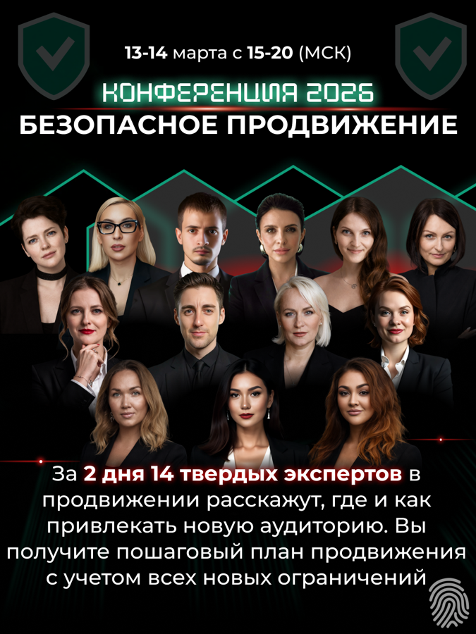
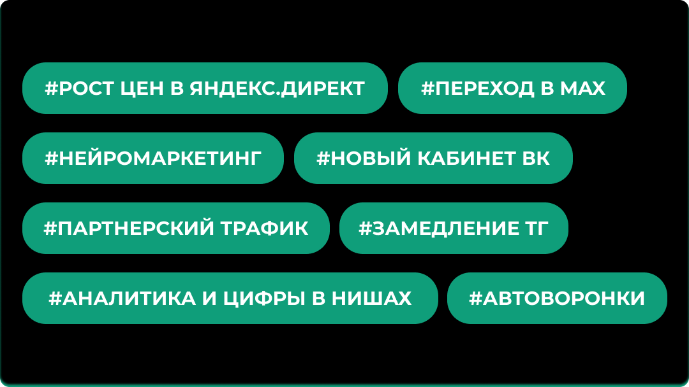
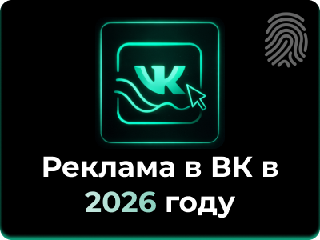
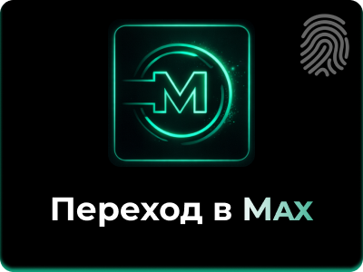
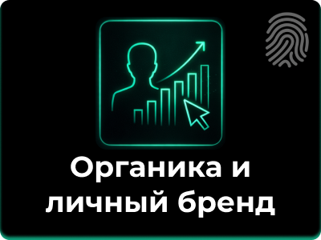
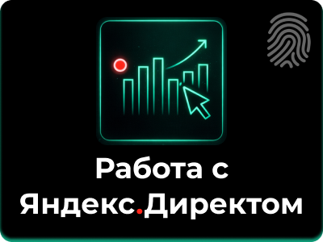

После регистрации откроется доступ в чат нетворкинга для поиска подрядчиков и клиентов.
За последние 4 года правила продвижения изменились до неузнаваемости.





После регистрации откроется доступ в чат нетворкинга для поиска подрядчиков и клиентов.
Онлайн на платформе GetCourse. Ссылку пришлем после регистрации.
13–14 марта 2026. Начало 1 и 2 дня в 15:00 мск. Завершение 1 и 2 дня в 20:00 мск.
Да, после регистрации бот отправит тебе письмо с предложением оплатить записи двух дней конференции, просто действуй по инструкции.
Занимает 30 секунд. Ссылку на трансляцию пришлем в этот бот.
Ссылку на конференцию и доступ в чат нетворкинга пришлем в бот.